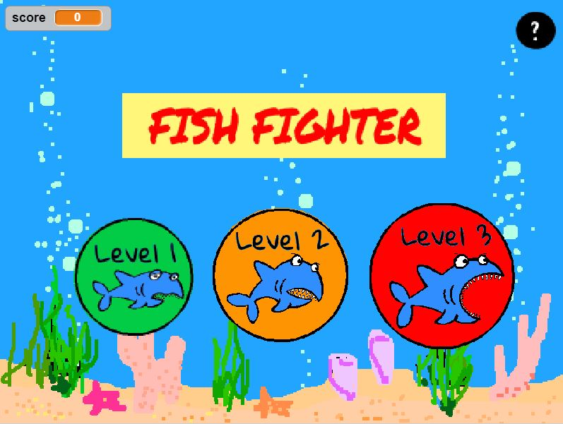
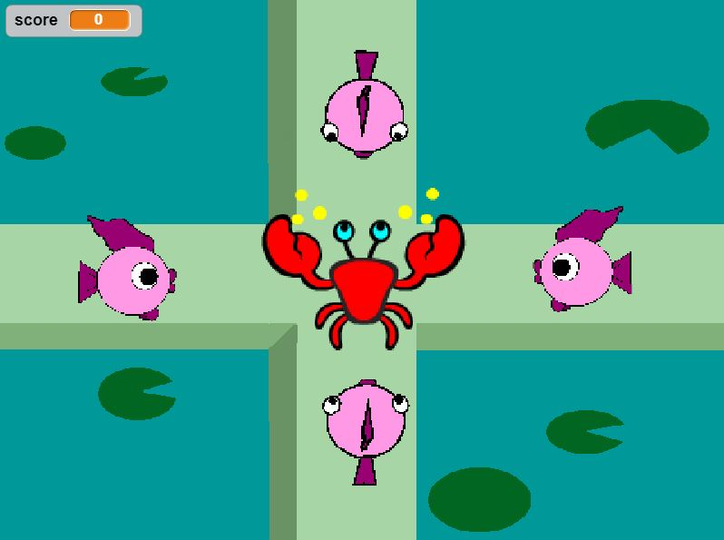
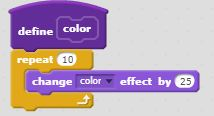

PORTFOLIO
PYTHON Choose Your Own AdventureFISH FIGHTER (Scratch Game)
 Fish Fighter Link
Game Description
The player is in the perspective of the crab. In order to fight off the fish,
the play will use arrow keys to attack. For every attack on a fish using the arrow keys,
the play will earn a point. In order to win, the play must earn 100 points.
If the fish reach the crab before the crab earns 100 points, the game ends.
The randomness of the fish's color increases with the increasingly difficult levels.
Reflection
The inspiration behind the game was taken from the game, Fist of Fury.
Two successful points from the game include the well-designed home page, and functioning increasing difficulties.
In the beginning, we did not know how to have the background switch to end page once the fish reached a certain point.
We made it a lot more difficult than it was meant to be, including coordinates and what not,
until we realized we could just switch once the fish touched the crab. We reached another obstacle with the respawning fish.
At first, we were having the fish hide and reappear. When that wasn't working, we figured a much simpler solution was to just have the fish go back to its original position.
If we had more time, I would have added more music that functioned properly.
More Blocks
PYTHON Choose Your Own Adventure
"What in the World is Going On?!" is an interactive choose your own adventure story, inspired by superhero stories.
It follows the tale of the user and his or her dog, Taro. In this story, the two earn separate superpowers and are forced to battle their enemy to survive.
A) While creating the story, I first ran into difficulties in getting the code to run at all. After fixing the indentation issues, I ran into further problems with the incremental processes.
I had to write each single event of the story and its follow-up outcomes to decisions as individual functions.
When follow-up events would not function properly and I soon realized it was an issue with missing function lines, and excess, unnecessary events. An iterative process I included was the old_man() function.
This function ran despite all previous decisions the user had made, summoning the story's villain.
B) The story structure is a form of procedural abstraction, as the scenes are in the form of functions.
Certain functions could be reused during the story, such as the old_man() function, that would run despite the previous decisions of the user.
Abstraction made the story and the code easy to follow, as scenes were separated, as well as if-statements.
The if-statements were placed in the scenes accordingly, rather than a full storyline.
C) One story I enjoyed was the Ryan Trang Simulator, because it was based on true events and was an entertaining read.